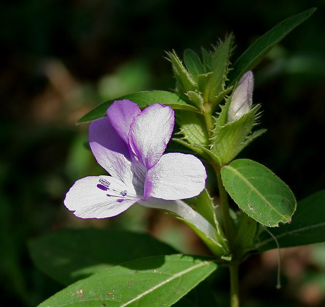

फिलिपिन वायलेटPhilippine Violet
Barleria cristata · Acanthaceae · FLR-0343

- Scientific name वैज्ञानिक नाम
- Barleria cristata L.
- Family कुल
- Acanthaceae
- Hindi हिंदी
- फिलिपिन वायलेट
- Local names स्थानीय नाम
- philippine violet, tadrelu, neeli katsareya, barleria cristata, jhad kateli
- Status here यहाँ की स्थिति
- native
- Movement आवागमन
- Resident, here all year
- Known from कहाँ दर्ज
- Others have published records from the wider Awadh–Purvanchal plain, none yet from Basti–Ayodhya अवध–पूर्वांचल से दूसरों के प्रकाशित अभिलेख, बस्ती–अयोध्या से अभी नहीं
- IUCN IUCN
- not evaluated
- Review समीक्षा
- not yet reviewed
When to look कब देखें
Expected mainly in August, September, October, November, December. मुख्यतः अगस्त, सितंबर, अक्टूबर, नवंबर, दिसंबर में अपेक्षित।
Uses and possibilities उपयोग और संभावनाएँ
“Traditional medicine” means a documented traditional use, not a claim that it works. Nothing on this page is medical advice.
Drawn from the documented uses in the profile below, where each is labelled traditional, current or a research lead. All uses →
Tell it apart from इनसे अलग पहचानें
फिलिपिन वायलेट / Philippine Violet
Barleria cristata L. — Acanthaceae
फिलिपिन वायलेट — बागीचों की बाड़ों और पथरीली जगहों पर खिलने वाली एक बेहद सुंदर, कोमल और बिना कांटों वाली बारहमासी झाड़ी। शरद ऋतु में इस पर गहरे जामुनी, नीले या कभी-कभी सफेद रंग के खूबसूरत फूल गुच्छों में खिलते हैं। इसके फूलों के नीचे कंघी जैसे दांतेदार बाहरी पत्ते (कैलिक्स) लगे होते हैं, जिनसे इसकी पहचान होती है।
Quick Identification त्वरित पहचान
| Feature | Description |
|---|---|
| Habit | Erect or spreading unarmed perennial shrub |
| Stems | Densely hairy, green becoming woody and pale brown at base |
| Leaves | Elliptic-oblong, dark green, softly hairy on both surfaces |
| Flowers | Showy blue-purple, violet, or pinkish-white, funnel-shaped |
| Calyx | Outer sepals large, ovate with sharply spinous-toothed or comb-like margins |
Field tip: Look along rural garden borders or shrubby slopes in October and November for thornless bushy shrubs dense with vibrant violet-blue trumpet flowers fringed by bristly comb-edged sepals.
हिंदी — कैसे पहचानें: नीले-बैंगनी रंग के सुंदर तुरही जैसे फूल, बिना कांटों वाली झाड़ी, और फूलों के नीचे कंघी जैसे कांटेदार दांते।
Morphology आकारिकी
Shrub description: Herbaceous or sub-woody, much-branched unarmed perennial shrub. Stems appressedly pubescent with soft whitish or fulvous hairs. Leaves opposite, elliptic-oblong or lanceolate, acute or acuminate at apex, tapering at base into a short petiole; surfaces densely covered with appressed hairs, especially along the secondary veins beneath. Inflorescence dense axillary or terminal spikes or pairs; bracts linear, scarious. Calyx distinctive: outer two sepals large, ovate-lanceolate, reticulate-veined, margins sharply and coarsely pectinate or spinous-ciliate; inner sepals much smaller and linear. Corolla funnelform, tubular base slender, limb spreading into five rounded lobes, violet-blue, purplish, or occasionally white. Capsule oblong, four-seeded.
हिंदी: यह एक बिना कांटों वाली कोमल झाड़ी है।
Behaviour & Ecology व्यवहार और पारिस्थितिकी
- Seasonal Flowering Flush: Produces an extraordinary profusion of flowers during post-monsoon autumn months from September to December.
- Pollinator Specialization: The long corolla tube requires long-tongued visitors; pollinated by skipper butterflies, hawkmoths, and anthophorine bees.
- Dormancy Response: Enters semi-dormancy after shedding seeds in dry summer, resprouting vigorously with pre-monsoon showers.
- Hedge Adaptability: Tolerates regular pruning and trimming, forming dense compact garden hedgerows.
हिंदी: बरसात के बाद सर्दियों की शुरुआत में इस पर ढेरों फूल खिलते हैं। यह लंबी सूंड वाले पतंगों और मधुमक्खियों द्वारा परागित होती है।
Life Cycle / Phenology जीवन चक्र
- Budding: Profuse terminal flower clusters initiate in late August as day length shortens following the monsoon.
- Peak Bloom: Reaches peak ornamental flowering from October through November, transforming rural borders with violet blossoms.
- Capsule Ripening: Small oblong four-seeded capsules ripen in December and January, splitting open with mechanical tension.
- Seed Dispersal: Shaggy, hygroscopically hairy seeds spring out and adhere to moist ground or animal fur.
हिंदी: अगस्त में कलियां आती हैं और अक्टूबर-नवंबर में पूरी तरह खिलती हैं। दिसंबर में बीज पककर चटकते हैं।
Associated Species / Interactions संबंधित प्रजातियाँ
- Butterfly Larval Host: Food plant for caterpillars of the blue pansy (Junonia orithya) and soldier commodore (Hypolimnas missipus).
- Flower Visitors: Visited for nectar by giant honeybees (Apis dorsata) and sweat bees (Lasioglossum).
- Shelter Associations: Provides sheltered foraging cover for Indian garden lizards, often flourishing in the light understorey of neem trees.
हिंदी: नीली पैंसी और अन्य तितलियों के बच्चे इसके पत्ते खाते हैं। मधुमक्खियां इसका रस इकट्ठा करती हैं।
Pests and Diseases कीट और रोग
- Leaf Miners: Micro-moth larvae occasionally create winding white serpentine mines within older leaf blades.
- Aphids: Green aphids gather along tender developing shoot tips during humid autumn spells.
- Powdery Mildew: White powdery fungal growth can coat leaves in shaded, poorly ventilated garden settings.
हिंदी: कभी-कभी पत्तों में कीड़े सुरंग बना देते हैं और छायादार जगहों पर फफूंद से सफेद पाउडर जम जाता है।
Agricultural / Human Relevance कृषि प्रासंगिकता
- Ornamental Landscaping: Highly prized in domestic gardens, temple grounds, and public parks for its brilliant violet autumn bloom.
- Live Borders: Used as an attractive low boundary hedge dividing garden beds and vegetable patches.
- Folk Medicine: Root decoctions and crushed leaves are applied in traditional medicine for swelling and bronchial discomfort.
हिंदी: इसे बागीचों और मंदिरों में सुंदरता के लिए लगाया जाता है। पारंपरिक चिकित्सा में इसकी पत्तियों का उपयोग सूजन कम करने में होता है।
Expected Locally स्थानीय रूप से अपेक्षित
Not a field record. Written from published accounts for eastern Uttar Pradesh. No confirmed local sighting yet — if you have seen it, that is what the atlas needs.
अभी तक स्थानीय पुष्टि नहीं। यह विवरण प्रकाशित स्रोतों से है, किसी अवलोकन से नहीं।
Expected in scrubby wastelands, village hedgerows, and garden borders across Basti, Ayodhya, and neighbouring Awadh districts. GBIF holds published records from the wider Awadh–Purvanchal plain, none yet from Basti–Ayodhya. To confirm this species for the Atlas, provide a clear photograph showing flowers, leaves, and habit, along with date, time, and specific location.
Distribution वितरण
Global range: Native to South and Southeast Asia, from India and Pakistan through southern China to Myanmar and the Philippines.
In India: Widespread across the subcontinent from the lower Himalayas to southern peninsular hills and plains.
In Uttar Pradesh: Documented from Lucknow, Gorakhpur, Varanasi, and Mirzapur across scrub and garden habitats.
In Basti district / eastern UP: Expected in village schoolyards, home gardens, roadside verges, and forest edges across Basti and Ayodhya.
हिंदी: यह पौधा भारत, चीन और दक्षिण-पूर्व एशिया में व्यापक रूप से पाया जाता है। उत्तर प्रदेश के बागीचों और रास्तों पर यह आम है।
Research Questions शोध प्रश्न
- What ratio of blue versus white flowering morphs exists in naturalized populations across eastern UP? / पूर्वी उत्तर प्रदेश में नीले और सफेद फूलों वाली किस्मों का क्या अनुपात है?
- How does pruning frequency during the monsoon influence autumn floral density? / बरसात में छंटाई करने से सर्दियों में फूलों की संख्या पर क्या असर पड़ता है?
- Which hawkmoth species serves as the primary nocturnal pollinator of the long corolla tube? / रात के समय कौन सा बड़ा पतंगा इसके गहरे फूलों का मुख्य परागण करता है?
- How do hairy seeds react to humidity changes to anchor themselves into soil crevices? / नमी मिलने पर इसके रोएंदार बीज जमीन में किस प्रकार जमते हैं?
- Does intercropping Barleria cristata around pulses repel common agricultural insect pests? / क्या दालों के चारों ओर इसे लगाने से हानिकारक कीट दूर रहते हैं?
Similar Species मिलती-जुलती प्रजातियाँ
| Species | How to tell apart | हिंदी |
|---|---|---|
| Barleria prionitis | Bears sharp yellow axillary spines and bright golden-yellow tubular flowers | तीखे पीले कांटे, चमकीले सुनहरे पीले फूल |
| Barleria strigosa | Much larger leaves; flowers deep blue in dense terminal bracteate spikes | बड़े पत्ते, बहुत गहरे नीले फूल |
| Ruellia tuberosa | Herbaceous tuberous plant with violet trumpet flowers; explosive cylindrical pods | कंद वाली जड़ी-बूटी, चटकने वाली लंबी फलियां |
Field rule: An unarmed hairy perennial shrub with violet-blue trumpet flowers and comb-like pectinate-toothed outer calyx lobes identifies Barleria cristata.
Taxonomy & Classification वर्गीकरण
Original description. Described by Carl Linnaeus in 1753 as Barleria cristata in Species Plantarum, vol. 2, p. 636.
Subspecies. Monotypic across northern India; various horticultural colour varieties are cultivated.
Family and order placement. Placed in the family Acanthaceae, subfamily Acanthoideae, in the order Lamiales.
IUCN status rationale. Not evaluated by the IUCN; very widely distributed, hardy, and common across urban, rural, and semi-wild landscapes.
हिंदी: कार्ल लिनिअस ने 1753 में इसका विवरण दिया था। यह एकेंथेसी कुल की झाड़ी है।
Photo Gallery फोटो गैलरी
No photos yet — add field photos to media/species/philippine_violet/ and run node scripts/sync_photos.js.
Photos needed आवश्यक फोटो
- [ ] Violet-blue trumpet flower displaying comb-toothed calyx lobes (कंघी जैसे दांतों वाला नीला-बैंगनी फूल)
- [ ] Bushy habit along a rural garden hedge in full autumn bloom (सर्दियों में फूलों से लदी पूरी झाड़ी)
- [ ] Ripe seed capsule splitting open to reveal seeds (बीज बिखेरता हुआ पका फल)
References संदर्भ
- Linnaeus, C. (1753). Species Plantarum, vol. 2, p. 636. Holmiae.
- Duthie, J.F. (1903). Flora of the Upper Gangetic Plain and of the Adjacent Siwalik and Sub-Himalayan Tracts, vol. 2, p. 201. Government of India, Calcutta.
- Hooker, J.D. (1884). The Flora of British India, vol. 4, p. 488. L. Reeve & Co., London.
- Brandis, D. (1906). Indian Trees: An Account of Trees, Shrubs, Woody Climbers, Bamboos and Palms, p. 498. Archibald Constable & Co., London.
- Kirtikar, K.R. & Basu, B.D. (1935). Indian Medicinal Plants, vol. 3, p. 1879. Lalit Mohan Basu, Allahabad.
- GBIF Occurrence Data — Barleria cristata L., India (2025).
Source file: species/flora/shrubs/philippine_violet.md